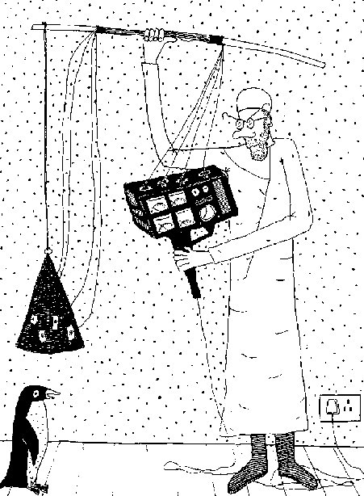

Tuesday, March the 17th, 2015
back to: title, date or indexes
There was an item on the Today programme on BBC Radio Four this morning about a new scientific study of penguins. I am afraid I was not paying due attention so cannot enlighten you. However, it did serve to remind me that, in the long ago, when I used to draw pictures, I once depicted, in the medium of pen and ink, a scientific experiment upon a penguin.
